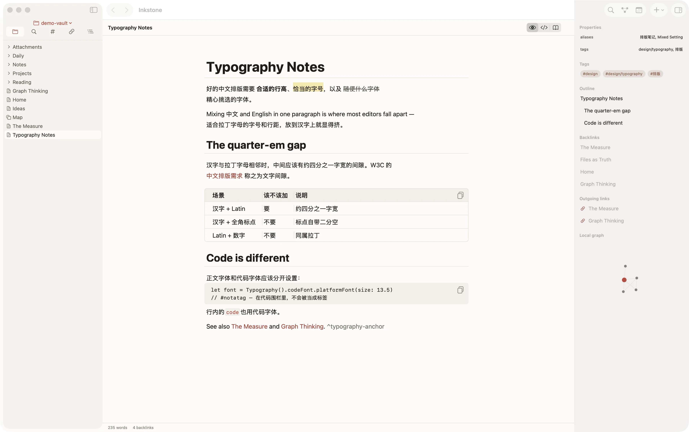

편집
분할 화면이 아니라 그 자리에서
제목, 굵게, 인용, 콜아웃, 체크박스, 표, 코드가 입력하는 대로 제자리에서 그려지고, 문법이 드러나는 것은 커서가 있는 줄뿐입니다. 읽기 모드는 별도의 읽기 전용 화면입니다. 본문 글꼴과 코드 글꼴, 각각의 크기는 따로 설정합니다. 읽기 모드에서는 문법 문자가 숨겨지는 것이 아니라 제거되므로, 문단을 복사하면 본문만 남습니다.

AI 지식 베이스 · Mac · iPhone · iPad
Inkstone은 폴더를 AI 지식 베이스로 바꿉니다. 메모, PDF, 사진, 녹음을 읽고 고칠 수 있는 규칙과 기기에서 실행되는 AI로 분류합니다. 아무것도 삭제되지 않으며, 모든 정리는 되돌릴 수 있습니다.
또는 Homebrew로 설치
brew install --cask iamzifei/tap/inkstone
무료 · 계정 불필요 · English · 简体中文 · 繁體中文


배울 설정이 없습니다. 이름과 위치를 정하고 넣기만 하세요.
iCloud Drive, 아무 폴더, 또는 이미 있는 폴더. 받은 편지함, 프로젝트, 영역, 자료, 미디어, 결과물, 비공개 폴더와 정리 규칙을 Inkstone이 만들어 둡니다.
창으로 끌어오거나 파일 앱에서 추가하세요. 처음에는 복사 또는 이동을 고릅니다(기본값은 복사).
비공개로 보이는 것은 먼저 비공개 폴더로, 그다음 당신의 규칙, 그다음 기기 내 모델. 날짜와 주제로 이름을 바꾸고, 애매한 것은 검토 폴더에서 기다립니다.


AI 컨텍스트 관리
모든 지식 베이스에는 Inkstone이 작성하고 최신으로 유지하는 입구 파일 세 개가 있습니다. 폴더를 AI 어시스턴트나 에이전트에 건네면 무엇인지, 어디에 무엇이 있는지, 어떤 파일을 믿어야 하는지 압니다.
AGENTS.md — 이것이 무엇이고, 에이전트가 여기서 지킬 규칙README.md — 사람과 기계 모두를 위한 폴더 지도SOURCE_OF_TRUTH.md — 무엇에 대해 어떤 파일이 기준인지Inkstone 표시 사이 부분만 다시 씁니다. 그 밖에 당신이 쓴 내용은 그대로입니다.

정리 규칙은 지식 베이스 안의 파일입니다. 설정에서 메모처럼 고치세요. 한 줄에 규칙 하나, 개인 정보 확인 바로 다음, 다른 무엇보다 먼저 적용됩니다.
## My rules - 청구서 → 20-Areas/Finance/Invoices - 리모델링 → 10-Projects/Renovation
그 아래에는 같은 쉬운 말로 된 기본 정책이 있어, 고치거나 버튼 하나로 되돌릴 수 있습니다.

지원 기기에서는 Apple의 기기 내 모델이 파일 위치를 정합니다. 아무것도 기기 밖으로 나가지 않습니다.
기본값은 꺼짐. 내 키를 쓸 때는 규칙으로 분류하지 못한 파일의 이름과 앞부분, 그리고 폴더 이름과 규칙을 보냅니다. 비공개로 보이는 파일은 보내지 않습니다.
계정도, 분석도, 우리 서버도 없습니다. 지식 베이스는 평범한 파일이 담긴 폴더입니다.
모든 것은 평범한 Markdown입니다. 다른 Markdown 앱의 보관소도 그대로 열리며, 다시 정리되지 않습니다.
편집
제목, 굵게, 인용, 콜아웃, 체크박스, 표, 코드가 입력하는 대로 제자리에서 그려지고, 문법이 드러나는 것은 커서가 있는 줄뿐입니다. 읽기 모드는 별도의 읽기 전용 화면입니다. 본문 글꼴과 코드 글꼴, 각각의 크기는 따로 설정합니다. 읽기 모드에서는 문법 문자가 숨겨지는 것이 아니라 제거되므로, 문단을 복사하면 본문만 남습니다.

연결
[[노트]], [[노트#제목]], [[노트^블록]], ![[임베드]], 그리고 프런트매터에 선언한 별칭이 하나의 색인으로 모입니다. 각 노트는 무엇이 자신을 가리키는지, 자신이 무엇을 가리키는지, 어떤 링크가 아직 목적지가 없는지 보여 줍니다.

형태 보기
힘 기반 시뮬레이션이 결정적이므로 같은 보관함은 매번 같은 그림을 그립니다. 열 때마다 다시 읽는 대신 배치 자체를 기억할 수 있습니다. 로컬 그래프는 노트 하나와 그 이웃만 보여 줍니다.

공간에 놓는 노트
카드와 파일과 선을 무한한 종이 위에 놓고 JSON Canvas 1.0으로 저장합니다. 이 형식의 다른 구현들이 읽고 쓰는 바로 그 파일입니다. 캔버스도 노트만큼 가지고 나갈 수 있습니다.

찾기
한 번의 단축키로 보관함 전체에 대한 퍼지 전환기가 열립니다. 전문 검색은 tag:와 path:를 이해하고, 태그는 본문에서든 프런트매터에서든, 중첩되든, 어떤 문자 체계로든 동작합니다. #프로젝트/진행중은 #project/active와 똑같이 색인됩니다. 만 건 규모의 볼트에서도 기다리지 않습니다. 검색은 메인 스레드 밖에서 실행됩니다.

두 번째 기기
iCloud로 동기화하거나 보관함을 GitHub 저장소로 푸시합니다. 동기화가 시작된 뒤에는 충돌이 무언가를 덮어쓰는 일은 없습니다. 양쪽에서 바뀐 노트는 다른 쪽 버전이 충돌 사본으로 내 버전 옆에 남습니다. 종류별 필터가 첨부와 미디어의 동행 여부를 정하며, 보관함 자신의 .gitignore는 존중됩니다.

접으면 익숙한 iPhone 앱입니다. 펼치면 사이드바와 노트가 나란히 놓입니다. 반쯤 펼치면 접힌 선 한쪽에 노트가, 다른 쪽에 백링크·개요·속성이 놓이며, 접힌 선을 가로질러 그려지는 것은 없습니다.
당신의 메모와 파일을 당신과 AI 모두가 찾기 쉽게 정리한 폴더로, AI에게 무엇이 어디 있는지 알려 주는 입구 파일이 있습니다. Inkstone에서는 평범한 폴더 그대로입니다.
AI 어시스턴트에게 올바른 파일과 그 규칙을 주는 것입니다. AGENTS.md와 SOURCE_OF_TRUTH.md가 어떤 에이전트에게든 그것을 알려 줍니다.
네. 보관소로 열면 그대로 둡니다. Inkstone이 만들거나 넘겨받은 지식 베이스만 정리됩니다.
macOS 26의 Mac, iOS 26의 iPhone과 iPad. 기기 내 모델에는 Apple Intelligence 지원 기기가 필요하며, 지원하지 않으면 규칙으로 정리합니다.
Inkstone은 무료입니다. Mac과 App Store 모두.
무엇이든 내려받기 전에 알아 둘 만한 것들.
| 지식 베이스 | 받은 편지함, 프로젝트, 영역, 자료, 미디어, 결과물, 비공개, 검토, 보관 — AGENTS.md, README.md, SOURCE_OF_TRUTH.md를 최신으로 유지 |
|---|---|
| 정리 | 먼저 개인 정보, 그다음 당신의 규칙, 그다음 Apple 기기 내 모델(또는 내 모델, 기본값 꺼짐). 기록, 되돌리기, 삭제 없음 |
| 플랫폼 | macOS 26과 iOS 26, 하나의 SwiftUI 코드베이스. Mac 앱은 유니버설이라 Apple 실리콘과 Intel 모두 지원 |
| 저장 | 직접 고른 폴더의 순수 Markdown 파일. 데이터베이스도 가져오기도 없음 |
| 호환성 | Obsidian 보관함을 양방향으로 그대로 엽니다. 캔버스는 JSON Canvas 1.0 |
| Markdown | GitHub Flavored Markdown에 더해 위키링크, 임베드, 블록 참조, 콜아웃, 각주, 수식, Mermaid |
| 동기화 | iCloud 또는 GitHub 저장소, 파일 종류별 필터 지원 |
| 작업 흐름 | Obsidian과 같은 자리표시자의 템플릿, PDF·HTML 내보내기, 명령 팔레트, Spotlight 검색, 단축어 동작 |
| 인터페이스 언어 | English, 简体中文, 繁體中文 |
| 소스 | GitHub에 공개. 라이선스는 아직 정하지 않았습니다. |
| 프라이버시 | 계정 없음, 텔레메트리 없음, 요청하지 않은 네트워크 호출 없음 |
무료이고, 아무것도 숨기지 않으며, 만들어지는 지식 베이스는 원래 당신의 폴더입니다.
또는 Homebrew로 설치
brew install --cask iamzifei/tap/inkstone